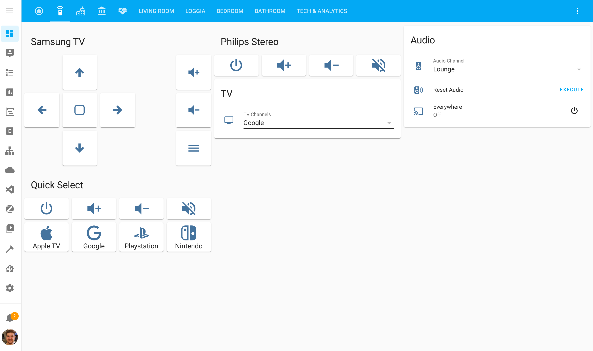
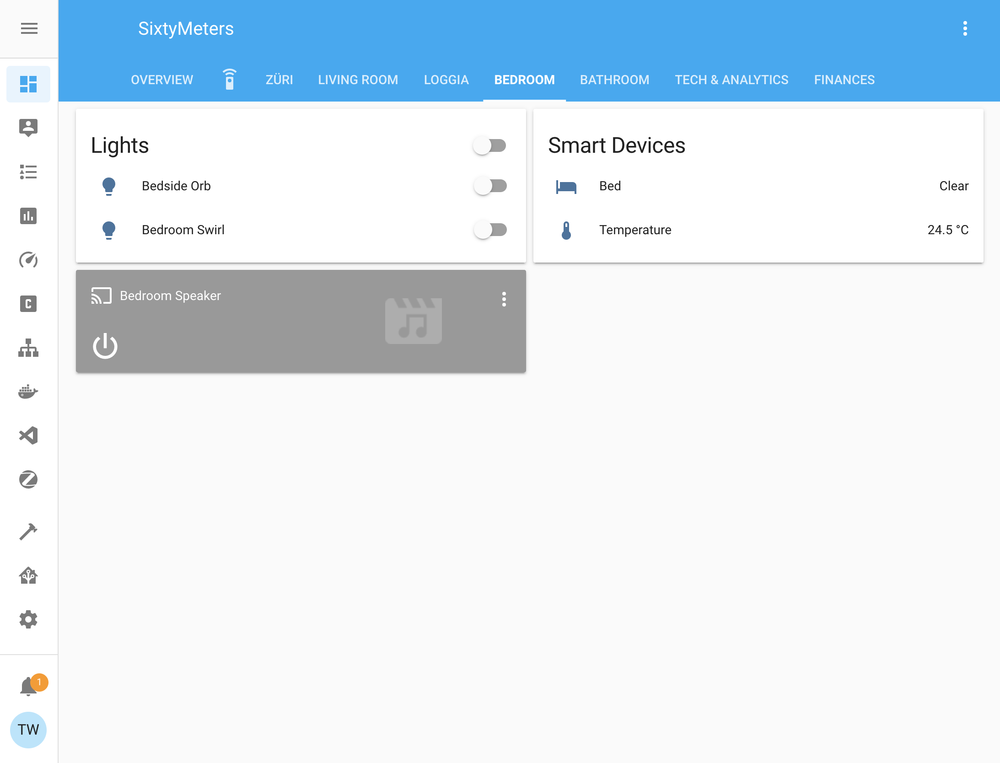

Home Assistant
Home Assistant is the brains of the whole operation. It controls all my smart devices and it provides a bit of an integration layer to connect everything to the Google Home and Apple Homekit ecosystems.
Configuration¶
Home Assistant is configured over its UI and a set of .yaml configuration files. Most of my configuration is checked in here. The entry point of the configuration is the configuration.yaml file at the root of the repository. To keep the configuration easier to maintain and read I've split off several sub configurations. You can recognize those by the !include example.yaml instructions in the main configuration.yaml.
Passwords, auth tokens and other secrets are stored in a secrets.yaml file that is not checked in. You can recognize those by the !secret id instructions in the configuration.
Screens¶
Overview¶
This screen I use 90% of the time. Most devices are controllable from the mini map "Apartment Status". Lights and basic devices will just turn on/off when clicked, other devices such as the blinds open a modal window to change detailed settings. I've also started setting up quick action buttons (below the minimap) to trigger my most used light scenes, music or the vacuum robot.
Media Remote Control¶
The remote control screen is used to control the TV and multi-room audio setup. The TV is controlled over a Logitech Harmony IR blaster and some undocumented REST APIs. The audio system is controlled via Chromecast/Google Home.

Züri Webcams¶
Some public webcams in various places around Zurich. I quite like this screen as it gives me a quick overview of what's happening in the city.

Living Room¶
I rarely use the individual room screens, mostly just if a device is misbehaving.

Loggia¶

Bedroom¶

Bathroom¶
Tech & Analytics¶
This screen has been a bit neglected for a while. Ultimately it should display warnings if the battery of sensors goes below a certain threshold and other monitoring things like that.

Addons¶
Home Assistant can be extended with addons. I'm currently using the following:
| Name | Description | Repo |
|---|---|---|
| AirCast | Creates virtual AirPlay devices for Chromecast devices | Community Add-on |
| Duck DNS | Automatically update your Duck DNS IP address with integrated HTTPS support via Let's Encrypt. | Official Add-on |
| Glances | Shows CPU, RAM etc. usage | Community Add-on |
| MariaDB | An SQL database server. Used as a replacement for the default SQLite DB. | Official Add-on |
| Mosquitto broker | An Open Source MQTT broker. Used to connect to devices over MQTT. | Official Add-on |
| Node-RED | Flow-based programming for the Internet of Things. Used for all sorts of automations | Community Add-on |
| Portainer | Portainer is an open-source lightweight management UI which allows you to easily manage a Docker host(s) or Docker swarm clusters. | Community Add-on |
| Visual Studio Code | This add-on runs Visual Studio Code, allowing you to edit your Home Assistant configuration directly from your web browser. | Community Add-on |
| deCONZ | Control a Zigbee network using ConBee or RaspBee hardware by Dresden Elektronik. | Official Add-on |
| Home Assistant Google Drive Backup | Creates regular backups of Home Assistant & Addons and uploads them to Google Drive. It uses the regular Home Assistant snapshot functionality and snapshots can be encrypted if you don't trust Google. | Third-Party Add-on |
| Influx | A time-series database. I use it to store long-term data that I want to keep. E.g. various fitness metrics, account balances etc. | Community Add-on |
| Grafana | An analytics and visualization platform. I used it to visualize long-term data that I store in InfluxDB. | Community Add-on |